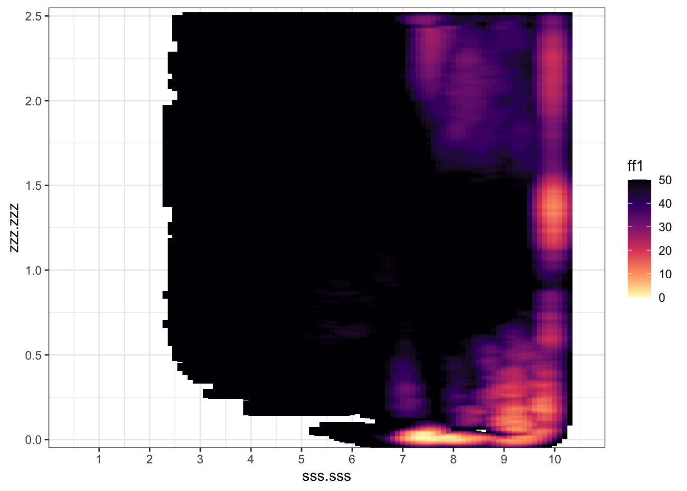

loaded <- purrr::quietly(library)(tidyverse)
library(here)here() starts at /Users/brady/git/phd/mdplots <- list()loaded <- purrr::quietly(library)(tidyverse)
library(here)here() starts at /Users/brady/git/phd/mdplots <- list()Potential for recalculating some of the free energy surfaces, by excluding the initial frames of the simulations which would weight the FES to to the earlier much more stable conformations.
If the following command is run after removing the first ~ 10 ns of a COLVAR_METAD file, then the recalculated FES is less weighted toward the initial start of the simulation.
plumed driver --plumed reweight_bias.dat --noatoms
reweight_bias.dat
# Read COLVAR file
sss: READ FILE=COLVAR_METAD IGNORE_TIME VALUES=path.sss
zzz: READ FILE=COLVAR_METAD IGNORE_TIME VALUES=path.zzz
metad: READ FILE=COLVAR_METAD IGNORE_TIME VALUES=metad.rbias
walls: READ FILE=COLVAR_METAD IGNORE_TIME VALUES=walls.bias
# Define weights
weights1: REWEIGHT_METAD TEMP=293 ARG=metad.rbias
weights2: REWEIGHT_BIAS TEMP=293 ARG=metad.rbias,walls.bias
# Calculate histograms
HISTOGRAM ...
ARG=sss.sss,zzz.zzz
GRID_MIN=0.0,-0.05
GRID_MAX=11,2.6
GRID_BIN=110,525
BANDWIDTH=0.1,0.005
LOGWEIGHTS=weights1
LABEL=hh1
... HISTOGRAM
HISTOGRAM ...
ARG=sss.sss,zzz.zzz
GRID_MIN=0.0,0.0
GRID_MAX=11,2.6
GRID_BIN=110,525
BANDWIDTH=0.1,0.005
LOGWEIGHTS=weights2
LABEL=hh2
... HISTOGRAM
# Print histograms to file
ff1: CONVERT_TO_FES GRID=hh1 TEMP=293
DUMPGRID GRID=ff1 FILE=fes.dat
DUMPGRID GRID=hh1 FILE=histo FMT=%24.16e
ff2: CONVERT_TO_FES GRID=hh2 TEMP=293
DUMPGRID GRID=ff2 FILE=fes_wall.dat
DUMPGRID GRID=hh2 FILE=histo_wall FMT=%24.16e
file <- "data/BAJ_01/COLVAR_METAD"
trim_colvar <- function(file, time_cutoff_ns = 10) {
lines_colvar <- readr::read_lines(file)
line_first <- lines_colvar[1]
time_cutoff <- time_cutoff_ns * 1e3
# filter based on the time cutoff the lines
times <- as.numeric(stringr::str_extract(lines_colvar, "(?<=^ )\\d+"))
lines_filtered <- lines_colvar[times >= time_cutoff & !is.na(times)]
new_colvar <- c(line_first, lines_filtered)
# process for writing a new COLVAR_METAD_ file
location <- stringr::str_extract(file, ".+\\/(?=[^\\/]+$)")
# new_name <- "COLVAR_METAD_trim10ns"
new_file <- stringr::str_glue("{location}COLVAR_METAD_trim{time_cutoff_ns}ns")
readr::write_lines(new_colvar, new_file)
# return the new file name
new_file
}
trim_colvar("data/BAJ_01/COLVAR_METAD", time_cutoff_ns = 5)data/BAJ_01/COLVAR_METAD_trim5nsreweight_bias.dat filefile <- "data/BAJ_01/reweight_bias.dat"
trim_bias_script <- function(file, new_name) {
new_lines <- readr::read_lines(file) |>
stringr::str_replace("COLVAR_METAD", stringr::str_glue("COLVAR_METAD_{new_name}")) |>
stringr::str_replace("fes.dat", stringr::str_glue("fes_{new_name}.dat"))
location <- stringr::str_extract(file, ".+\\/(?=[^\\/]+$)")
location
new_name <- stringr::str_glue("{location}reweight_bias_{new_name}.dat")
readr::write_lines(new_lines, new_name)
new_name
}
trim_bias_script(file, 'trim5ns')data/BAJ_01/reweight_bias_trim5ns.datfes_reprocess <- function(dir, time_cutoff_ns = 10) {
new_name <- stringr::str_glue('trim{time_cutoff_ns}ns')
if (!(stringr::str_glue("fes_{new_name}.dat") %in% list.files(dir))) {
colvar <- stringr::str_glue("{dir}COLVAR_METAD")
cli::cli_progress_message("Completed colvar trimming.")
reweight_script <- stringr::str_glue("{dir}reweight_bias.dat")
new_colvar <- trim_colvar(colvar, time_cutoff_ns = time_cutoff_ns)
new_bias <- trim_bias_script(reweight_script, new_name)
system(stringr::str_glue("cd ~/git/phd/md/{dir}; plumed driver --plumed reweight_bias_{new_name}.dat --noatoms"))
cli::cli_progress_message("Completed fes recalculation.")
} else {
cli::cli_progress_message("Trimmed FES already exists.")
}
}
# fes_reprocess("data/BAJ_03/", 5)"data/BAJ_01/fes_reweight/fes.dat" |>
mdfret::readfes() |>
mutate(
ff1 = ff1 - min(ff1),
ff1 = scales::oob_squish(ff1, c(0, 50))
) |>
ggplot(aes(sss.sss, zzz.zzz, fill = ff1)) +
geom_tile() +
# geom_raster() +
scale_fill_viridis_c(
option = 2,
direction = -1,
na.value = "transparent"
) +
scale_x_continuous(breaks = 1:10, expand = expansion()) +
scale_y_continuous(expand = expansion()) +
coord_cartesian(xlim = c(0, 11), ylim = c(-0.05, 2.55)) +
theme_bw() +
theme(
# panel.ontop = TRUE,
panel.background = element_blank()
)
This gives us some more potential energy wells that were explored in the simulations that we can look at the structures of. While the most energetically favourable conformations were the starting state, these are some additional states which are worth investigating.
"data/BAJ_01/fes_tim7ns.dat" |>
mdfret::readfes() |>
mutate(
ff1 = ff1 - min(ff1),
ff1 = scales::oob_squish(ff1, c(0, 50))
) |>
ggplot(aes(sss.sss, zzz.zzz, fill = ff1)) +
geom_tile() +
# geom_raster() +
scale_fill_viridis_c(
option = 2,
direction = -1,
na.value = "transparent"
) +
scale_x_continuous(breaks = 1:10, expand = expansion()) +
scale_y_continuous(expand = expansion()) +
coord_cartesian(xlim = c(0, 11), ylim = c(-0.05, 2.55)) +
theme_bw() +
theme(
# panel.ontop = TRUE,
panel.background = element_blank()
)if (FALSE) {
fes_reprocess("data/BAJ_03/", 5)
}
"data/BAJ_03/fes_trim5ns.dat" |>
mdfret::readfes() |>
mutate(
ff1 = ff1 - min(ff1),
ff1 = scales::oob_squish(ff1, c(0, 50))
) |>
ggplot(aes(sss.sss, zzz.zzz, fill = ff1)) +
geom_tile(colour = NA) +
# geom_raster() +
geom_contour(
aes(z = ff1),
binwidth = 5,
colour = "white",
alpha = 0.4
) +
scale_fill_viridis_c(
option = 2,
direction = -1,
na.value = "transparent"
) +
scale_x_continuous(breaks = 1:10, expand = expansion()) +
scale_y_continuous(expand = expansion()) +
coord_cartesian(xlim = c(0, 11), ylim = c(-0.05, 2.55)) +
theme_bw() +
theme(
# panel.ontop = TRUE,
panel.background = element_blank()
) -> plots[["RNA03"]]region <- function(s, z, s_size = 0.2, z_size = 0.05) {
dat <- tibble(
xmin = s - s_size,
xmax = s + s_size,
ymin = z - z_size,
ymax = z + z_size
)
dat
}
add_region <- function(plot, s, z, s_size = 0.2, z_size = 0.05, colour = "skyblue") {
dat <- region(s, z, s_size, z_size)
plot +
ggplot2::geom_rect(
data = dat,
ggplot2::aes(
x = 0,
y = 0,
xmin = xmin,
xmax = xmax,
ymin = ymin,
ymax = ymax
),
colour = colour,
fill = "transparent"
)
}
add_region(plots$RNA03, 7.3, 0.05, z_size = 0.1,s_size = 0.5, colour = "blue")Warning in ggplot2::geom_rect(data = dat, ggplot2::aes(x = 0, y = 0, xmin =
xmin, : Ignoring unknown aesthetics: x and yWarning: Removed 37714 rows containing non-finite values (`stat_contour()`).Warning: The following aesthetics were dropped during statistical transformation: fill
ℹ This can happen when ggplot fails to infer the correct grouping structure in
the data.
ℹ Did you forget to specify a `group` aesthetic or to convert a numerical
variable into a factor?